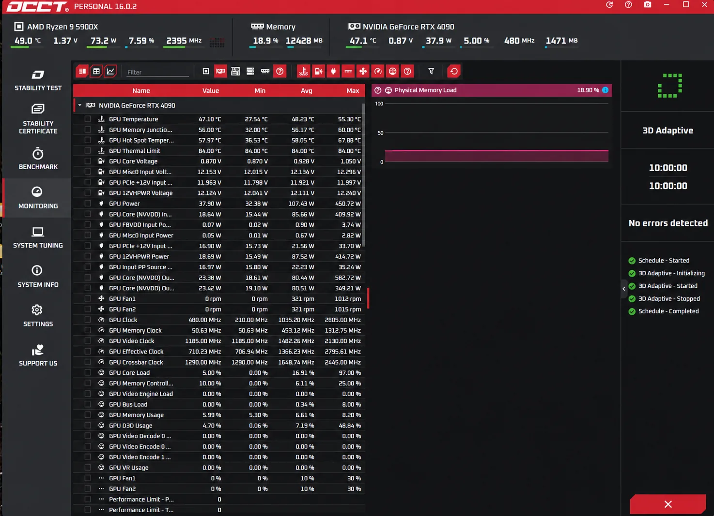

Insurance on the way home is optional, and it is yours to arrange. We don't insure cards in the post, and we don't buy cover for you. If you want your card covered, set it up from your end once you approve the repair, before the card is packed. Australia Post Extra Cover goes up to $5,000. A card worth more, such as any RTX 5090 at today's prices, needs your own transit insurance on top, or you can collect it from the workshop.
This page sets out what each option covers, what it costs, what it won't pay for, and the test report we send you before the card leaves, so you have proof it was working.
Why This Matters More Now
Graphics card prices have jumped. On 26 October 2026:
- RTX 5090: the cheapest one in stock in Australia was A$9,136, and most boards were selling for A$12,000 to A$13,000. At launch in January 2025 it was A$4,039.
- RTX 4090: new stock has run out in Australia. The last new listing we saw was A$6,500.
The $100 of cover that comes with a parcel barely registers against those numbers, and even the $5,000 Extra Cover limit falls short of a 5090. Prices move week to week, so check what your card is worth close to the day it ships.
Who Arranges What
| Task | Who |
|---|---|
| Decide whether to insure the card | You |
| Choose the level of cover and pay for it | You |
| Keep proof of value, such as your receipt and current prices | You |
| Make any claim with the carrier or insurer | You |
| Stability-test the card and send you the report | Us |
| Pack it in the packaging it arrived in | Us |
| Post it with your label or the service you chose, and send you tracking | Us |
Your Options at a Glance
| Card value | Option | Cost |
|---|---|---|
| Up to $100 | Cover included with Australia Post Parcel Post and Express Post | Nothing extra |
| $100 to $5,000 | Australia Post Extra Cover on a return label you buy | $2.50 for each extra $100, plus $2.95 Signature on Delivery over $500 |
| Over $5,000 | Your own single-transit insurance, on a tracked, signed-for service | Quoted by the insurer on the card's value |
| Any value | Your home contents policy, if it covers items in transit | Ask your insurer |
| Any value | Collect it from our workshop | Nothing |
Up to $5,000: Australia Post Extra Cover
For most cards this is the simplest route. Create the return label yourself in a MyPost account, add Extra Cover for what the card is worth and Signature on Delivery, and put the printed label in the box when you send the card in. If you decide on cover after the diagnosis, you must email it to us as a PDF, in reply to the email with your job number, before the card is packed.
The first $100 of cover comes with Parcel Post and Express Post. Each extra $100, or part of $100, costs $2.50, up to $5,000. On top of postage, that works out like this:
| Card value | Extra Cover | With Signature on Delivery |
|---|---|---|
| $2,000 | $47.50 | $50.45 |
| $3,500 | $85.00 | $87.95 |
| $5,000 | $122.50 | $125.45 |
To claim, Australia Post needs proof of lodgement and may ask for proof of value. It won't pay for damage that was already there, damage caused by poor packing, or certain types of item, and it looks at each claim on its own facts.
Over $5,000: Your Own Transit Policy
Extra Cover stops at $5,000, so an RTX 5090, or a 4090 valued at its replacement price, needs more. The usual answer is single-transit cargo insurance: a policy that covers one parcel for one trip.
NTI, for example, sells single-transit cover online for consignments up to $50,000, including goods sent by post or courier. Under its wording:
- Buy it before the card leaves us. Cover bought once the parcel is moving doesn't count.
- It pays like for like. That means a similar card of the same age and condition, or the repair cost. Not the price of a new card.
- It excludes breakdown with no outward damage. A card that arrives in a perfect box and won't work isn't covered.
- Unattended delivery costs more. There is an extra $250 excess if the parcel was left unattended.
- The clock is short. You must tell the carrier within 3 days of finding loss or damage.
Other cargo insurers and brokers sell similar cover. Read the policy wording, and check that it covers a used graphics card.
Some couriers sell higher declared-value cover as well. FedEx, which took over TNT, has offered cover for computers up to A$40,000. Ask for the current terms and price in writing, book the pickup from our workshop, and tell us the day.
Couriers to Check Before You Rely on Them
Some courier cover doesn't suit a repaired graphics card. As their published terms read in October 2026:
- StarTrack: cover tops out at $5,000, and its transit warranty excludes second-hand and used goods. A repaired card is a used card.
- CouriersPlease: its free Parcel Protect stops at $1,000, excludes electronic devices, and doesn't apply with Authority to Leave.
- Sendle: cover stops at $1,500.
- Transdirect: cover stops at $4,500, with a $100 excess.
Home Contents Insurance
Some home and contents policies cover belongings away from home, under portable items, valuables or accidental damage cover. Many don't extend to an item while a carrier has it. Ring your insurer before the card leaves, tell them what it is worth, and get the answer in writing.
What We Send You Before It Ships
Before the card is packed, it runs a long stability test under load, and we send you a screenshot of the results. Here is one from our bench:


What it shows:
- No errors detected after 10 hours under load.
- Temperatures: the GPU peaked at 55.3 °C, the hot spot at 67.9 °C and the memory junction at 60 °C.
- Power: it drew up to 450.7 W, with the 12VHPWR connector holding above 12.04 V.
Keep the report with your invoice. If you ever need to claim, it shows the card was working when it left us, which is one of the first things an insurer asks. The photos of the card and its serial number sticker that you took before sending it in tie the report to your card.
Step by Step
- Work out what the card is worth. Look up what the same model sells for today, new and used, and screenshot the prices. Keep them with your original receipt.
- Choose your cover. Up to $5,000, Extra Cover on an Australia Post label. Above that, a transit policy as well, or collect the card.
- Buy it before the card leaves us. Cover has to be in place before the parcel is lodged.
- Get the label to us. Put it in the box when you send the card in. If you decide after the diagnosis, you must email it to us as a PDF, in reply to the email with your job number, before the card is packed. We print it and use it.
- We test, pack and post. You get the stability report first, then tracking once the card is lodged. If you would rather it didn't sit in a depot over a weekend, ask us to post it early in the week.
- Be there to sign. Don't use Authority to Leave or a parcel locker. A parcel left on the doorstep can cut or void your cover.
- Check it the day it arrives. Look over the box before you open it, film the unboxing, then fit the card and test it.
If the Card Arrives Damaged
- Keep everything. The box, the padding, the bag and the label. Insurers often want to see them.
- Photograph it. The outside of the box, each layer of packing, and the damage.
- Report it straight away. Tell the carrier, and your insurer if you bought a policy. Some policies give you only 3 days.
- Claim with the paperwork. Your tracking number, proof of value, our invoice and the stability report.
- Let us know. Ring 02 8428 9224 and send the photos, so we know what happened.
What Cover Usually Won't Pay For
- A card that just stops working, with no sign of damage. Most transit cover excludes electrical breakdown.
- Poor packing. We repack the card in the box it came in, so send it in well: an anti-static bag, a sturdy box and 5 cm of padding on every side. Keep RTX, GeForce and brand names off the outside of the box.
- Damage that was already there. This is why your photos from before you posted it matter.
- The price of a new card. Most cover pays what a card of the same age and condition is worth, or the repair cost.
- Delays. When an Express Post parcel turns up late, Australia Post refunds the postage and nothing more.
- Parcels left unattended, under some policies, or only with a higher excess.
Faults After It Arrives Are a Warranty Matter
If the card arrives in one piece and the fault we repaired comes back, that isn't an insurance claim. Every repair carries our 12-month warranty on parts and labour for the same fault. Ring us on 02 8428 9224.
Rather Not Post It? Collect It
If you can get to Sydney, collecting the card from our workshop near Castle Hill takes the transit risk away completely. We're open Monday to Saturday, 8am to 6pm. Ring 02 8428 9224 to arrange a time.
Questions
Do you insure my graphics card when you post it back?
No. Insurance is optional and you arrange it. We post the card with the service you choose, and we don't add cover on your behalf.
Can you add insurance to my invoice?
No. We can add the postage to your invoice at cost, but the card then travels with only the cover the service includes, which is $100 with Australia Post. For more, put a return label with Extra Cover in the box, or email it to us before the card is packed, or buy your own policy.
How much does Extra Cover cost on a $5,000 card?
$122.50, plus $2.95 for Signature on Delivery and the postage itself. The first $100 of cover is included, and each extra $100 costs $2.50.
Can I insure an RTX 5090 for its full value?
Not with Australia Post alone, because Extra Cover stops at $5,000. A single-transit insurance policy can cover the full value, or you can collect the card from our workshop.
Will insurance pay for a brand-new card?
Usually not. Most cover pays what a card of the same age and condition is worth, or the cost of repair. Some pay the lower of the value you declared and the card's actual value.
What do I need to make a claim?
Proof of lodgement and the tracking number, proof of value such as your receipt and current prices, our invoice, the stability test report, and photos of the packaging and the damage.
Do I have to insure the card?
No, it's your choice. Without extra cover you rely on what the carrier includes, which is $100 with Australia Post Parcel Post and Express Post.
General information only. This isn't insurance advice. Prices and terms were checked in October 2026 and they change. Read the policy wording or product disclosure statement before you buy cover.
For packing and how a mail-in repair works, see mail-in GPU repair. For model-specific repairs, see RTX 5090 repair and RTX 4090 repair.